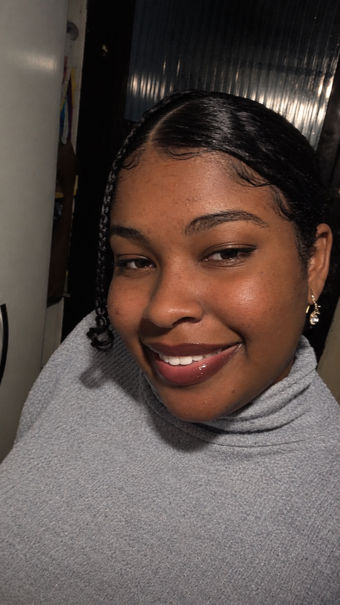

I'll Be There For You!
A história por trás de um nome
Danielly Basilio de Paula cresceu em uma família humilde, em um ambiente onde as coisas simples tinham grande valor. Sua infância foi marcada por momentos de união, criatividade e curiosidade pelo mundo ao seu redor.
Durante seu tempo livre, gostava de fotografar paisagens, fazer artesanato, escrever, criar origamis e ler mangás e histórias em quadrinhos.
Conheça minha história
Sobre mim
Danielly é uma pessoa determinada, responsável e perseverante. Cresceu em uma família simples, onde aprendeu o valor do esforço e da dedicação.
Desde pequena, desenvolveu um olhar curioso e atento ao mundo ao seu redor. Gosta de aprender coisas novas e explorar diferentes possibilidades.
Ao longo de sua trajetória, descobriu diferentes interesses e habilidades, construindo sua própria história por meio de experiências e aprendizados. Aos 21 anos começou a fazer facudade de psicologia, se formou aos 26. Entrou na academia policial realizou seu sonho em ser perita fotógrafa, se casou e teve um filho.
Minhas habilidades
🍳 Cozinhar
Gosto de experimentar receitas e descobrir novos sabores.
🤝 Trabalho em equipe
Sei colaborar, compartilhar ideias e respeitar opiniões diferentes.
⭐ Liderança
Tenho iniciativa, responsabilidade e gosto de organizar atividades.
💪 Dedicação
Procuro me esforçar e aprender com cada experiência.
🧩 Raciocínio lógico
Gosto de desafios que estimulam meu pensamento e minha criatividade.
Dedicação e perseverança
Acredito que cada experiência representa uma oportunidade de aprendizado. Com dedicação e persistência, podemos desenvolver nossas habilidades e construir nossos objetivos.
Valorizo os momentos em família, as amizades e todas as pequenas conquistas que fazem parte da vida.
Meus hobbies
📸 Fotografia
Registrar paisagens e momentos especiais.
🎨 Artesanato
Criar objetos e explorar minha criatividade.
📚 Leitura
Ler mangás e histórias em quadrinhos.
🧩 Quebra-cabeças
Resolver desafios e exercitar o raciocínio.
🍰 Culinária
Preparar receitas e experimentar novos pratos.
🌳 Trilhas
Aproveitar a natureza e conhecer novos lugares.
Meus projetos
💻 Meu portfólio
Site pessoal desenvolvido durante as aulas da professora Michelle do Nascimento, utilizando HTML, CSS e programação web no curso de Informática.
Voltar ao inícioMeu currículo
Aqui você poderá conhecer um pouco mais sobre minha formação e minhas experiências.
ver currículo Baixar currículoEntre em contato
Obrigada por conhecer meu portfólio!